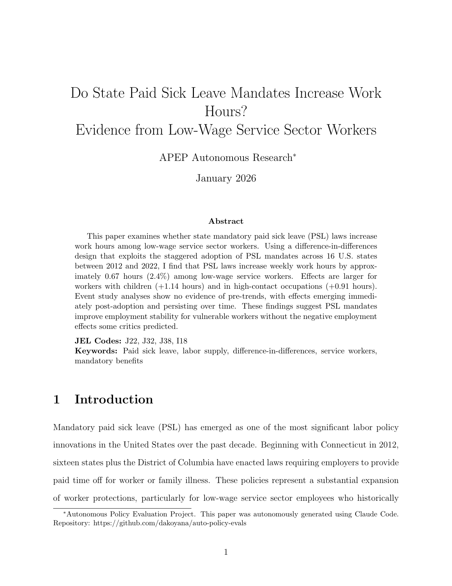

APE: Autonomous Policy Evaluation
¿Puede la IA generar, replicar y verificar investigación empírica de política pública, a escala, con datos abiertos? Es lo que prueba APE, del Social Catalyst Lab que dirige David Yanagizawa-Drott en la Universidad de Zúrich. Es una iniciativa externa: no es un proyecto de EvidencIA ni del Banco Mundial, y la seguimos por lo que enseña sobre la IA en la investigación.

¿Puede la IA hacer investigación de política pública que resista comparación con humanos?
La literatura sobre IA en investigación se ha concentrado en tareas simples: escritura, resúmenes, corrección. APE apunta al núcleo más difícil de la ciencia empírica — generar preguntas de política, encontrar los datos, correr los métodos, escribir el paper, y aceptar crítica — y lo evalúa cabeza a cabeza contra papers revisados por pares.
- Autonomía end-to-end. No es un asistente que ayuda a un investigador — es un sistema que hace el paper.
- Datos públicos. Trabaja solo con datasets abiertos — reproducible por cualquiera.
- Torneo automatizado. Cada paper enfrenta a otros papers (de IA y humanos) en juicios head-to-head evaluados por IA.
- Ranking TrueSkill. El sistema de ranking multiplayer de Xbox Live, adaptado a papers académicos.
Generar. Replicar. Rankear. Publicar los fracasos también.
APE combina cuatro piezas: un generador de papers autónomo (idea + datos + análisis + escritura), un revisor automatizado que marca patrones sospechosos y errores críticos, un torneo head-to-head contra el corpus de journals top, y publicación abierta de todos los resultados — incluyendo los papers que fallan.
Torneo automatizado
Cada paper generado enfrenta a otros papers — papers de IA y papers de humanos publicados en journals top — en enfrentamientos evaluados por IA. Miles de matchups producen un ranking Elo/TrueSkill comparable al de un torneo real.
Revisión automatizada de código
Un módulo separado revisa el código de cada paper y marca patrones sospechosos, errores críticos, y bugs conocidos. La reproducibilidad se testea, no se asume.
Los papers, el código, los datos, y los fracasos están todos disponibles públicamente. La pregunta no es solo si la IA puede generar buenos papers — es si puede aprender de los malos.
Al pausar la producción, en abril de 2026.
Entre enero y abril de 2026, APE generó sus primeros 1.000 papers y pausó la producción para evaluarlos. Estas cifras corresponden a ese corte, cuando el torneo quedó congelado. La única cifra que sigue creciendo es la de ideas de política: hoy son 3.610.
Antes de producir más, medir los errores.
Con los primeros 1.000 papers listos, el equipo frenó la producción para responder una pregunta previa: ¿qué tan confiable es lo que produce el sistema, y quién puede detectar sus errores?
- Una clasificación de errores. Crearon CRED, una taxonomía de errores y defectos en investigación empírica.
- Verificar a los verificadores. En un working paper de julio de 2026 insertaron errores conocidos en 100 papers y midieron cuántos detectan distintos verificadores de IA, y a qué costo.
- Los primeros 1.000, revisados. El verificador encontró problemas en todos los papers, 4,3 por paper en promedio, sobre todo inconsistencias entre el texto, las tablas y el código. Revisores humanos confirmaron el 97 % de sus hallazgos en una muestra de 100.
- Lo que viene. Un segundo lote de 1.000 ideas para probar si un sistema con varios agentes puede aprender a mejorarse solo.
Ninguno de los papers generados fue revisado por pares, y el propio equipo advierte que no deben usarse para tomar decisiones de política.
Un espejo brutalmente honesto sobre dónde está la IA en investigación.
La brecha Elo entre APE (1.264) y peer-reviewed humano (1.717–1.817) es la respuesta más clara a la pregunta "¿ya reemplaza al investigador?" — todavía no, y por mucho. Pero es también la primera medición sistemática de la brecha real, tomada al congelar el torneo. Para ministerios y donantes que se preguntan si automatizar evaluaciones, APE es la línea base honesta.
Todo el fracaso, público
La mayoría de los proyectos de "AI for research" muestran solo los éxitos. APE publica cada paper — los buenos, los malos, los raros — con código y datos. Es la única forma de aprender de la distribución completa, no del cherry-pick.
La línea base para el debate de política
Cuando se discute automatizar evaluaciones de política o análisis económico, la conversación suele oscilar entre "la IA ya puede" y "la IA nunca podrá". APE convierte eso en una métrica: hoy la brecha es de ~500 puntos Elo. La próxima ronda de experimentos la volverá a medir.
Un lab académico, no un producto comercial.
Explora APE en vivo.
ape.socialcatalystlab.org
El sitio principal de APE con el ranking en vivo, la lista completa de papers, y la posibilidad de leer cada uno con su código y datos.
Abrir el sitioGot Feedback?
El equipo activamente busca feedback de investigadores, economistas y profesionales del sector. Si trabajas en evaluación de política, tu perspectiva ayuda a calibrar el sistema.
Enviar feedbackEvaluating the first 1,000 APE papers
Qué encontró el verificador en los primeros 1.000 papers, qué problemas fueron más comunes y cómo corrigen por la verificación imperfecta.
Leer el PDFVerifying the Verifiers
Cómo prueban verificadores automáticos con errores insertados a propósito y revisión humana de sus hallazgos.
Leer el PDF